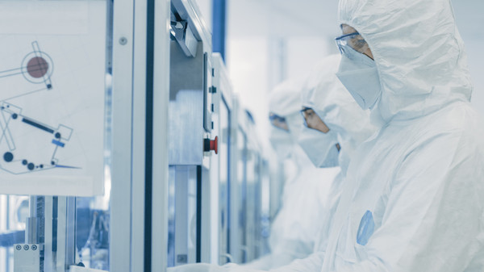

2020 ~ 현재
2011 ~ 2019
2001 ~ 2009
1991 ~ 1999
1981 ~ 1989
관계사
광동제약은 제약·유통소재 사업 기반의 핵심역량과 자원, 전문성을 활용하여 사회문제를 해결하고 더 나은 세상을 만들기 위해 노력하고 있습니다.광동한방병원
Kwangdong Hospital광동한방병원은 한방과학화를 위한 임상과 과학적 실험을 위해 최수부 회장이 설립하였으며,기업의 사회적 책임과 이윤의 사회환원 차원에서 별도 의료법인화 함으로써 박애와 봉사 원훈을모토로 건 향상은 물론이거니와 끊임없는 지역 의료봉사를 펼쳐왔습니다.
광동생활건강
Kwangdong Life&Health광동생활건강㈜는 1993년 광동건강㈜로 출발하여 생활건강 전문회사로 설립된 이후 첫째, 고객신뢰 둘째, 정직 셋째, 고객감동이라는 사훈 아래 지난 10년간 고객의 사랑 속에 성장을 거듭해온 명실상부한 생활건강 전문회사로 자리매김 하였습니다. 기업의 존재가치를 ‘고객’에 있다고 생각하고 있는 광동생활건강㈜는 좋은 원료만 고집하는 최씨 고집의 광동정신 그대로 철저한 고객중심의 사고와 행동으로 고객에게 최고의 가치를 제공하고 고객에게 감동을 주는 사랑 받는 정직한 회사가 되기 위해 최선을 다하고 있으며 고객으로부터 신뢰 받는 기업으로 발전해 나갈 것을 약속 드립니다.
코리아e플랫폼
Korea e Platform구매대행 서비스를 근간으로 건설 구매대행 및 해외 현지 구매대행서비스 제공 등 다양한 비즈니스 모델을 운영하는 원/부자재 및 소모성 자재Total Service Provider입니다.
케이디인베스트먼트
KD Investment광동제약㈜이 축적한 제약바이오헬스케어 산업에 대한 노하우를 바탕으로 “신기술사업에 대한 투자 및 융자”, “신기술사업자에 대한 경영 및 기술의 지도”, “신기술사업투자조합의 설립” 등의 업무를영위할 목적으로 설립된 ‘신기술금융사’입니다.
-
본사
서울특별시 서초구 서초중앙로 85 가산빌딩 02-6006-7777 -
송탄공장
경기도 평택시 경기대로 1081 (장당동) 광동제약(주) 031-8030-1777 -
GMP 공장
경기도 평택시 산단로 114 광동제약(주) 031-612-1111 -

R&DI 센터
서울특별시 구로구 디지털로 271 벽산디지털벨리 3차 02-6446-7362 -
호남지점
광주시 광산구 송도로 274(송정동) 062-945-0381 -
부산지점
부산시 강서구 대저1동 1184-3 051-941-0288 -
대전지점
대전광역시 대덕구 오정로 43 042-632-6094 -
대구지점
대구광역시 달서구 월곡로 485 (월성동) 2층 053-561-0391